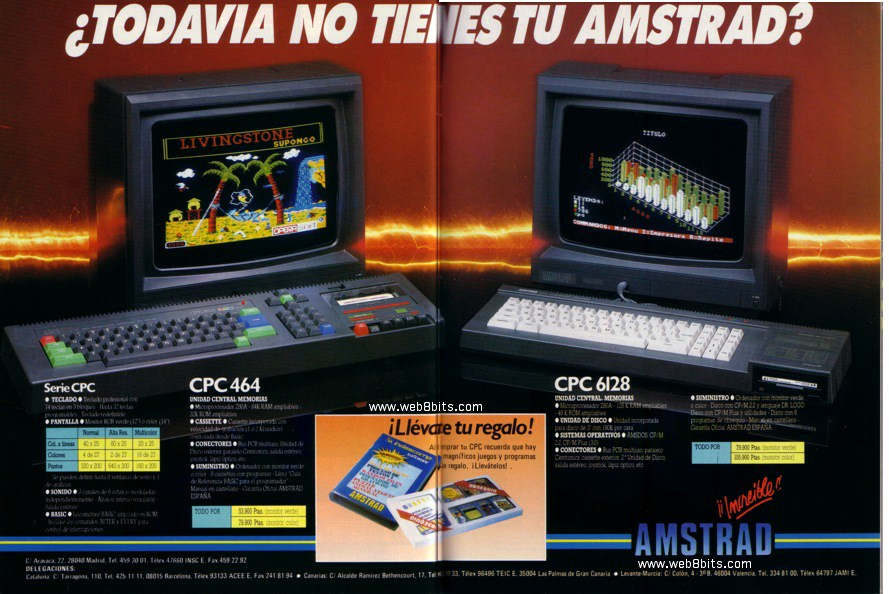

<
Serie de ordenadores personales de 8 bits diseñados para ser un
competidor directo al Commodore 64 y al Sinclair ZX Spectrum, y
así fue, tuvo mucho éxito. Lo que más distingue a la máquina
de Amstrad es la consola (teclado) negro mate con las esquinas agudas y una forma rectangular.También era posible utilizar el
monitor como pantalla de televisión con un convertidor de TV
opcional.
>
